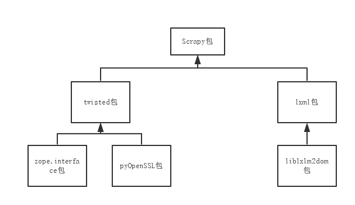
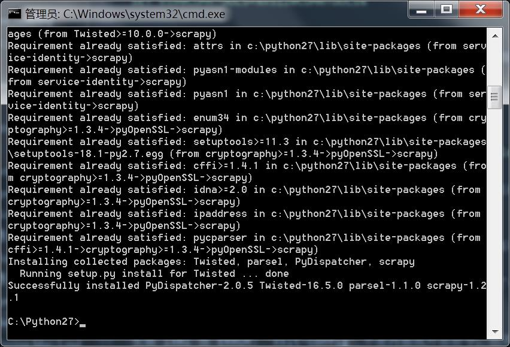

乐观的开始
因为最近需要用到爬虫去搜集数据，我就想试试一直很火的Python爬虫-Scrapy.
去官网看了看，嗯pip install scrapy
很简单嘛，分分钟就能把环境搞定，然后就可以愉快的抓数据了啊。
因为有pycharm IDE，为了图方便，就直接用它来安装scrapy.
诶，失败报错了。。。
噩梦中
查了查资料，据说是因为scrapy还需要其他包的支持，所以最好先把其他包装好。
就是下面这个顺序，从下往上

然后开始在pycharm中尝试安装，结果又是各种报错。。。
看来偷懒是不行了，果然命令行才是王道，打开命令行，pip install scrapy
额，怎么还是不成功。报错：error: Unable to find vcvarsall.bat
查查这个问题是怎么回事，网上的说法是需要VS2009提供编译支持，然后我有VS2013(2010及以后版本都可)，所以可以进行如下设置：
|
|
或者更暴力，直接配置系统环境变量VS90COMNTOOLS指向 %VS你的版本COMNTOOLS%
你还可以更暴力，在“..python安装路径…\Lib\distutils目录下有个msvc9compiler.py找到243行
|
|
(这个就是为什么要配 ”VS90COMNTOOLS“ 的原因，因为人家文件名都告诉你了是 Microsoft vc 9的compiler, 代码都写死了要vc9的comntools，就要找这个玩意儿，找不到不干活)
如果Python版本小于2.7，强烈建议使用 VS08版，用2010或者更高可能部分扩展不好使。给个例子：
好了，这么一堆东西弄完了，也该可以了吧。怀着激动地心情重启了电脑，输入命令：pip install scrapy
DUANG…
安装 lxml 报 ERROR: ‘xslt-config’ 不是内部或外部命令，也不是可运行的程序.
好吧，继续寻找解决方法，发现可以手动安装lxml包，去http://pypi.python.org/simple/lxml/ ，下载符合要求的lxml.exe包安装。
然后重新去pip install scrapy(这是第几次了？)
然后终于。。。

重见天日
啊。。。好累
我装它是想干嘛来着－.－
**诶，天怎么黑了！！！！